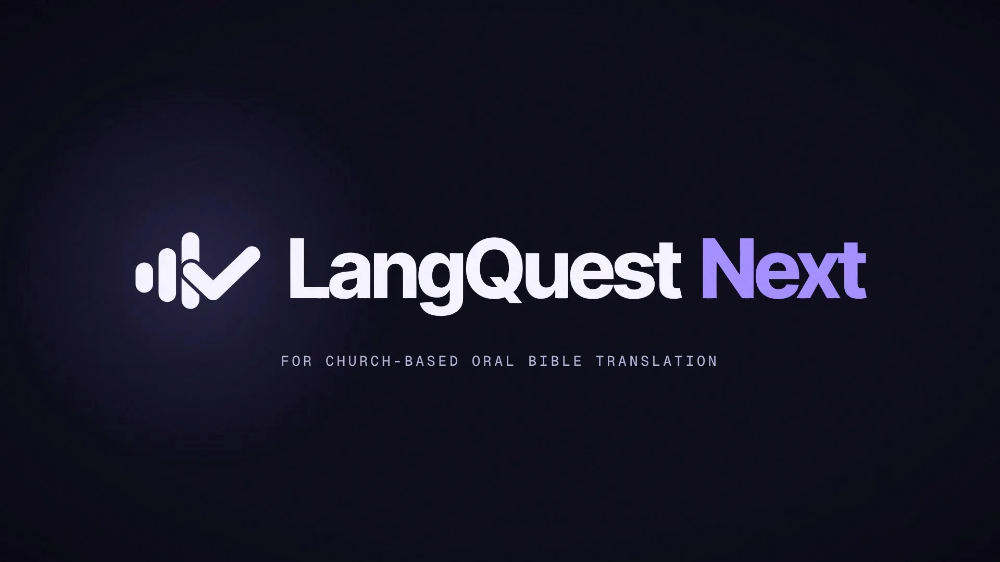
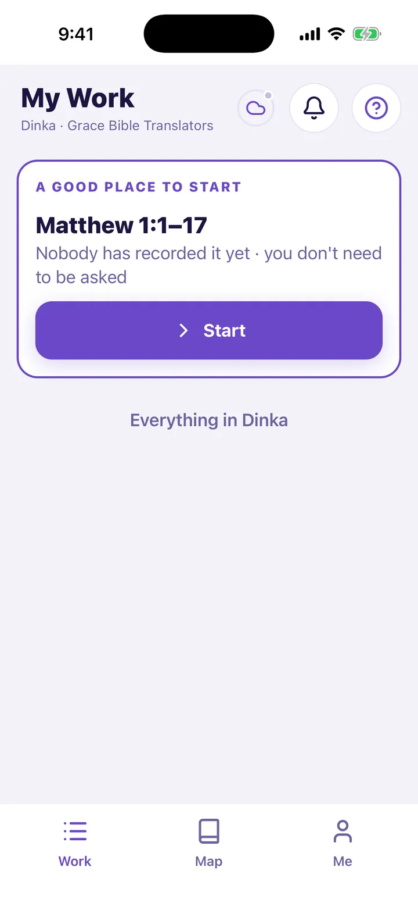
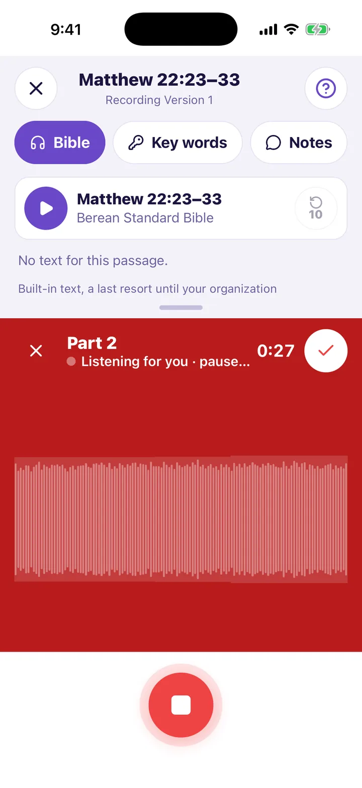
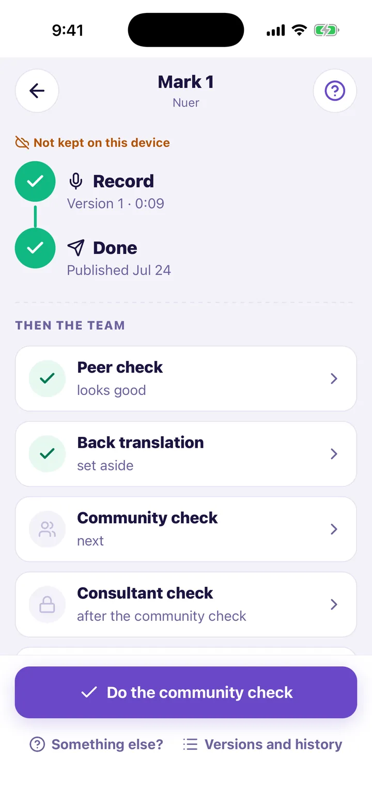

Listen until you know it
Play the source passage as many times as you need, then press the red button and speak. Takes split at each pause.
ETEN Summit 2026 · Virtual tools lounge · 10–12 November
LangQuest helps church-based teams translate Scripture out loud: listen to the source, speak the translation into a phone, and get each version heard early.
Talk with us at the Summit Watch the film

Who it's for
LangQuest is built for church-based teams, especially where laptops and steady internet are hard to come by. It is most useful from first drafting through community, peer and consultant review, because recording keeps working offline and syncs when a connection returns.



How it works
Play the source passage as many times as you need, then press the red button and speak. Takes split at each pause.
Record through long stretches with no signal. Every change is saved on the phone first and syncs when it can connect.
Publish a version so peers, the community, elders and consultants can listen while the passage is still fresh.
Versions, reviews and notes stay on the record, so the next reviewer sees what was decided and why.
Your organization sets its own review steps, roles and reference material. LangQuest does not prescribe one method.
Recordings you make stay with your organization, and your organization chooses who may use the work.
What we're seeing
950,000+
audio clips recorded with LangQuest so far in 2026 (959,116 on 9 October)
Partners have carried audio Bible projects through to completion in LangQuest. Clip volume shows use; finished Bibles show that teams can carry the work through.
Translators in Mexico told us they needed
a box to put things in.
LangQuest helps make work and review visible. It does not certify a translation or replace the judgment of the community, translators and consultants.
Ryder Wishart, founder of Frontier R&D, represents LangQuest in the virtual tools lounge, 10–12 November. Write to him to set up a conversation during the event.
Working with text, subtitles or dubbed audio? See Aquilla, our translation platform for experts.